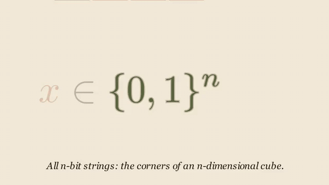

Claude Fable 5.2
Base 12 Computer: From a Notebook Sketch
Made from a single photograph of a pencil drawing: folds K₁₂ onto an icosahedron (66 = 30 + 30 + 6) and animates a base-12 counter.
Playable showcase of 3D mathematical animations generated end-to-end by frontier AI models (Gemini 4 Neon, Gemini 4 Argon, Claude Fable 5.2, Claude Opus 5.5, and GPT-6 Astra) using isolated provider silos and verified Manim Community Edition scenes.
Built by the new single-CLI Gemini 4 Neon silo (math-to-manim-neon). Visualizes the 3D zeta landscape and first five zero wells, Stepanov's multiplicity obstruction over the integers, Levent Alpöge & Claude's chain of √X automorphic theta lifts across 175,000+ Lean 4 files, and Alessandro Masullo's 12-year 940-page human manuscript — noting both await independent verification.
Made from a single photograph of a pencil drawing: folds K₁₂ onto an icosahedron (66 = 30 + 30 + 6) and animates a base-12 counter.
Zero net magnetization with spin-split electron bands rendered through the multi-engine SceneSpec Studio pipeline.
Visualizing the May 2026 disproof of the discrete geometry unit-distance conjecture from one prompt to MP4.

10-minute film on the proof of the Aaronson–Ambainis conjecture and its explicit influence floor c·v^(5/2)/d^6.
Sculptural zeta landscapes and phase-winding closeups exploring the zero-free frontier Re(s) > 7/8.